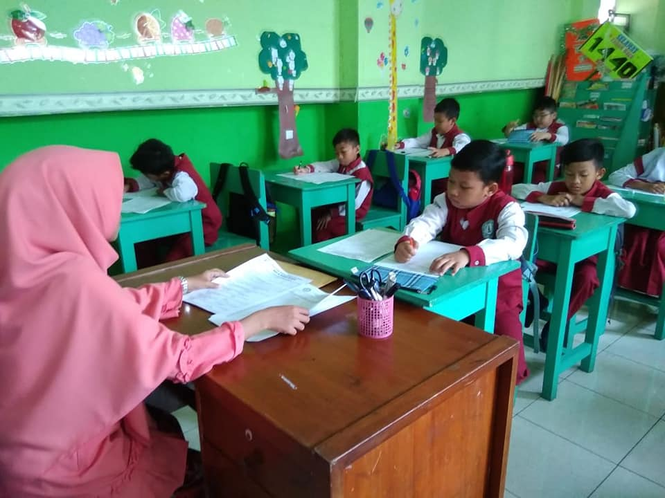

UJIAN SEKOLAH UTAMA ONLINE 2021
PETUNJUK SINGKAT UJIAN ONLINE
- Berdoa sebelum mengerjakan soal.
- Waktu yang disediakan 120 menit.
- Teliti dalam mengerjakan soal dan tidak terburu-buru.
- Simpan lah pekerjaan kamu dengan cara klik tombol penyimpanan yang telah disediakan.
- PERHATIAN! Tombol simpan akan hilang setelah waktu habis.
- Ucapkan Hamdalah setelah selesai mengerjakan soal.

JADWAL HARI INI